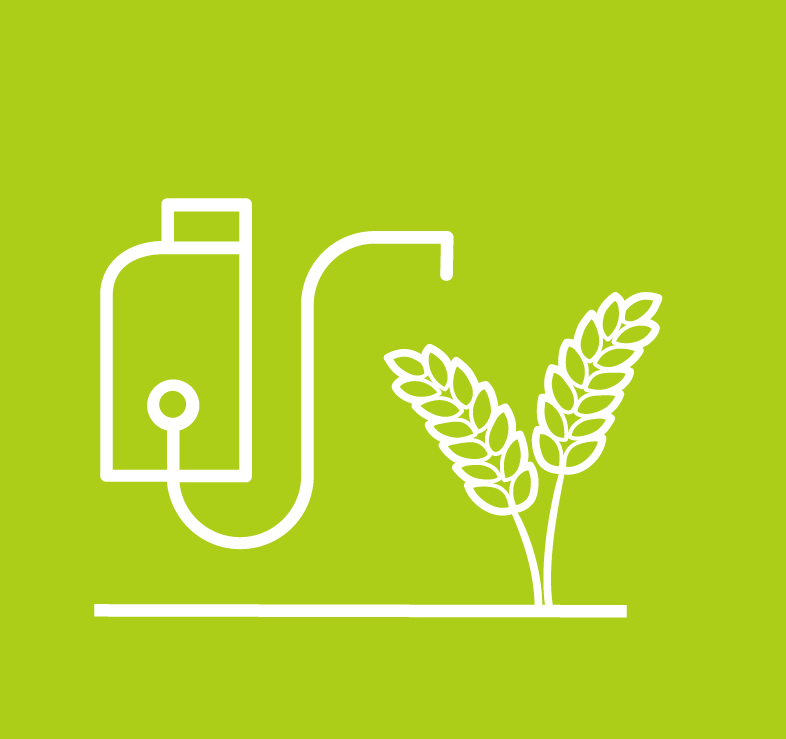

TIEMPO ATMOSFÉRICO ACTUAL
Esta herramienta satelital, provee información en tiempo real sobre el comportamiento de las nubes en la atmósfera, brindando información del movimiento de estas, que tengan una alta probabilidad de generar precipitaciones. La clave de conocer el movimiento de las nubes es poder determinar el comportamiento y su dirección, evaluando así el riesgo de generar lluvia sobre nuestra ubicación, las cuales pueden afectar la eficiencia de las labores que estemos desarrollando. El uso de esta herramienta esta enfocado a determinar con una anticipación de 1-2 horas el riesgo de precipitaciones, con el fin de reprogramar las labores agronómicas en caso de ser necesario
TIEMPO ATMOSFÉRICO (INFORMACIÓN SATELITAL)